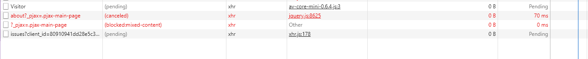
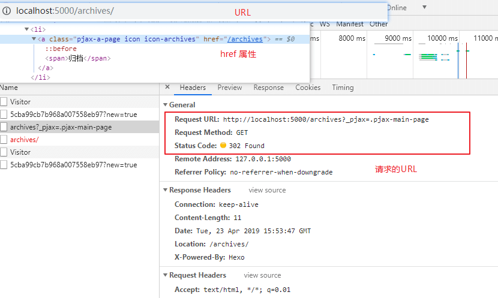
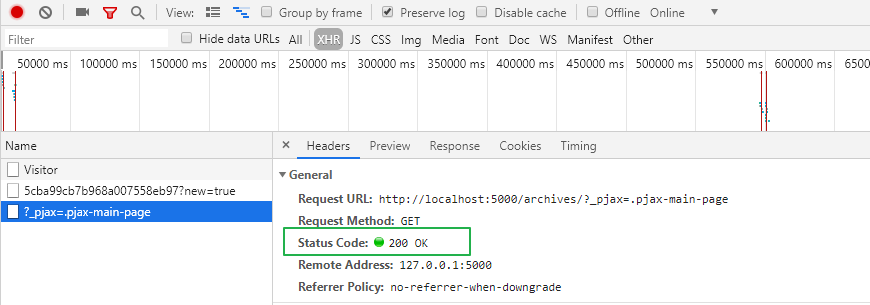

主题更新记
亮点
- 使用 pjax 重写了主题，让页面部分加载，加快网页的速度
- 新增页面加载动画
- 新增 Aplayer 播放器
- 新增访问来源功能，借鉴(
拷贝修改) 主题集成友链访问统计 - 使用 medium-zoom 展示文章图片
优化代码的组织方式
bug 解决
pjax 与 highligh.js 渲染问题
highligh.js 是 代码高亮的插件，它有这样一个函数方式 initHighlighting，用来初始化。
当使用 pjax 进行跳转文章，重新调用了上面的函数，还是发现文章中代码块没有被渲染成功。
猜测是不是要重新请求 highligh.js，才能重新初始化，搜索到的解决办法也印证了自己的想法。最开始搜索到的方法：每一次 pjax 请求完成后，重新请求 highligh.js 文件，再使用 initHighlighting 进行初始化。
上面的方法，导致每次都需要重新初始化，会浪费时间，又重新调整了搜索关键词
最后使用的方法来源自这条 issues :Highlighting doesn’t trigger when using PJAX，其实只需要使用 highlightBlock 方法就可以完美解决。
// 重新渲染代码块
document.querySelectorAll('pre code').forEach((block) => {
hljs.highlightBlock(block);
});其实这个方法，就写在文档里了，只是咱当时认为只有 initHighlighting 才能够渲染。
pjax 失效
正是由于使用 pjax ，让咱找了一天的 bug。
问题是这样被咱发现的，在本地预览时，pjax 可以正常的工作，可将博客部署到 github 上后，却发现没有切换页面时的动画加载效果，打开控制台，发现浏览器并有红色的 pjax 请求，而且一闪而过，整个页面重新请求，并没有达到 pjax 部分加载的功能。
咱意识到大概是那个 pjax 请求并没有成功，于是咱先把 网络速度跳慢（slow 3G），然后使用咱的手速，终于截取到了错误信息

可以看到关键的错误信息 blocked:mixed-content，打开了万能的谷歌引擎，得到的信息如下：
防止混合内容：大概意思就是网页中混合着 http 请求 和 https 请求，这会使网页变得不安全，所以会被浏览器拦截掉。
文中给出的解决办法是添加一个 meta 标签去自动修正混合内容。
<meta http-equiv="Content-Security-Policy" content="upgrade-insecure-requests">不过，在本地预览时 http://hostlocal:4000 会产生一些奇奇怪怪的问题！！！，因为这个页面是 http 请求，暂时没想到办法解决。
20190423 更新
我发现 pjax 失效的真正原因了，原来是因为配置文件页面路径配置存在问题。
# 最初配置
archives:
name: 归档
url: /archives
icon: icon-archives
# 最后配置
archives:
name: 归档
url: /archives/
icon: icon-archives最关键的就在这 / 之间。
先来看看最开始错误的情况，这次勾选上了 preserve log 选项，再也不要拼手速了。

可以看到，这个 http 请求的构成 /archives?_pjax=.paga-main-page，返回了 302 状态码，也就是重定向了，于是重新请求了 /archives/，导致了 pjax 的失效。
所以当我重新配置好之后，这个问题，就解决啦！！！

这样本地预览的时候，可以正常的使用 pjax 功能啦，尝试重新生成推送到 Github 后进行访问测试，也没有问题。
其根本原因在于当服务器接收到某个末尾不含 / 的 URL 请求时，比如 http://localhost:5000/archives 服务器会先搜索网站的根目录里面有没有 archives 文件，如果没有，就会把 archives 当成目录进行处理，然后返回 archives 目录下的默认首页，也即 http://localhost:5000/archives/(等同于http://localhost:5000/archives/index.html）
其他
可能还会因为自己的水平有限，这个主题存在一些其他的 bug 没有被发现，先暂时记录这么多了。